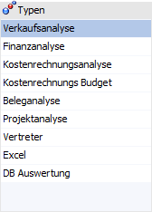
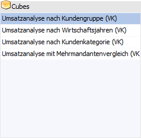
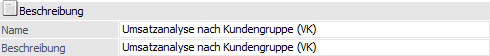
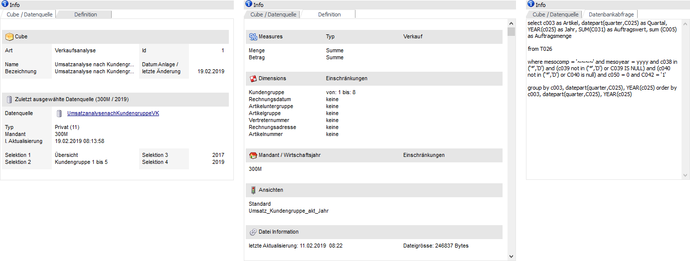
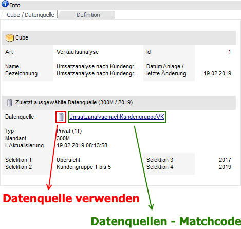
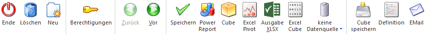

Im Startfenster des Cube Wizard werden alle bereits angelegten Cubes aufgeführt. Folgende Tätigkeiten können u.a. durchgeführt werden:
ü Neuanlage eines Cubes (siehe Button "Neu")
ü Löschen eines Cube (siehe Button "Löschen")
ü Bearbeiten eines Cubes (siehe u.a. Button "Vor")
ü Ausgabe eines Cubes (siehe u.a. Button "Power Report")
Achtung
Des Weiteren können in der WinLine mobile mit Hilfe des Cube Wizards bestehende Cubes ausgegeben werden (z.B. in Form eines Power Reports). Die Neuanlage oder Bearbeitung von bestehenden Cubes wird nicht unterstützt!

Typen

Im ersten Schritt stehen unter "Typen" neun Hauptbereiche zur Verfügung, über welche die einzelnen Cubes angelegt bzw. ausgewählt werden. Je nach Bereich stehen dabei andere Daten aus der WinLine zur Verfügung:
ü "Verkaufsanalyse" um Statistik-Werte aus WinLine FAKT zu erhalten
ü "Finanzanalyse" für Werte aus WinLine FIBU
ü "Kostenrechnungsanalyse" und "Kostenrechnungs Budget" für Werte aus WinLine KORE
ü "Beleganalyse" für die Auswertung von WinLine FAKT-Belegen
ü "Projektanalyse" für die Auswertung von Projekten
ü "Vertreter" für die Analyse von Vertreter-Provisionen und -Bemessungen
ü "Excel" für die Aufbereitung von Werten aus externen Excel Dateien
ü "DB Auswertung" für die Verwendung von selbst kreierten SQL-Statements
Hinweis
Der Bereich "Typen" wird ab dem zweiten Schritt im Wizard als "Wizard Schritte" angezeigt und beinhaltet dann an Stelle der Typen die einzelnen Wizardschritte. Dadurch kann per Mausklick zwischen den einzelnen Schritten gewechselt werden.
Achtung
Sollte der Benutzer für verschiedene Applikationsbereiche keine Berechtigungen aufweisen, dann werden die jeweiligen Typen ausgeblendet und ein Zugriff auf die Cubes bzw. die Anlage eines neuen Cubes ist nicht möglich.
Cube

Im Bereich "Cube" werden die bereits vorhandenen Cubes angezeigt.
Ø neuen Cube erstellen
Durch Anwählen des Buttons "Neu" bei dem jeweiligen Hauptbereich (der Fokus muss auf dem entsprechenden Typ stehen) kann eine neue Cube-Definition (Aufbau des Cubes) erstellt werden.
Beschreibung

Ø Name / Beschreibung
In diesen Feldern kann die Cube-Definition betitelt werden.
Ø Exceldatei (nur bei "Excel")
An dieser Stelle wird der Speicherort der einzulesenden Excel-Datei hinterlegt. Per Taste F9, Lupen-Symbol oder Doppelblick kann hierfür ein Dateidialog geöffnet werden.
Ø Datenblatt (nur bei "Excel")
Hier wird das Tabellenblatt der Excel-Datei eingetragen, in welchen sich die auszuwertenden Daten befinden.
Info

Der Bereich "Info" untergliedert sich in die Register "Cube / Datenquelle", Definition und Datenbankabfrage.
ü Register "Cube /
Datenquelle"
In diesem Register werden Informationen zu dem aktuellen Cube
und der zuletzt ausgewählten Datenquelle (bezogen auf Cube / Benutzer / Mandant
/ Wirtschaftsjahr) ausgewiesen.
Durch Anwahl des Icons  wird die zuletzt gewählte Datenquelle
automatisch geladen und in der weiteren Folge bei der Ausgabe (z.B. als Cube
oder Power Report) verwendet. Wird hingegen auf den Namen der Datenquelle
geklickt, so öffnet sich der Datenquellen - Matchcode.
wird die zuletzt gewählte Datenquelle
automatisch geladen und in der weiteren Folge bei der Ausgabe (z.B. als Cube
oder Power Report) verwendet. Wird hingegen auf den Namen der Datenquelle
geklickt, so öffnet sich der Datenquellen - Matchcode.
Beispiel

ü Register "Definition"
Dieses
Register steht (außer bei Cubes des Typs "DB Auswertung") immer zur Verfügung
und zeigt Informationen zum Aufbau des Cubes.
ü Register
"Datenbankabfrage"
Dieses Register steht nur bei Cubes des Typs "DB
Auswertung" zur Verfügung und ermöglicht die Eingabe des SQL-Statements (maximal
10.000 Zeichen).
Innerhalb des Statements kann mit den folgenden Platzhaltern
gearbeitet werden:
ü ~~~~ = aktueller Mandant (muss in " " angegeben werden)
ü yyyy = aktuelles Wirtschaftsjahr
ü *Data* = aktuelle Daten-Datenbank
ü *System* = aktuelle System-Datenbank
ü *Bi* = aktuelle BI-Datenbank
ü *Header* = SQL-Statement-Angaben bezogen auf die aktuelle Datenquelle / Snapshot
Des Weiteren wird im Standard automatisch die Datenbank des aktuellen Mandanten genutzt, wobei das Statement immer aus der WinLine BI-Datenbank heraus ausgeführt wird. Sobald die Information "dbo" oder die Platzhalter "*Data*", "*System*" bzw. "*Bi*" innerhalb des SQL-Statements vorkommen wird diese Automatik außer Kraft gesetzt und die Datenbanken können / müssen manuell angegeben werden.
Achtung - Arbeiten mit Verweisen
Bei der Verwendung von Verweisen (JOIN) sollten die zu verwenden Datenbanken immer per Platzhalter oder fix vorgegeben werden!
Beispiel 1 - fixe Datenbanken
Es sollen Daten aus einem CRM-Fall
dargestellt werden. Hierbei stammen Teile der darzustellenden Informationen aus
einer weiteren SQL-Datenbank (dort Tabelle T768).
SELECT 1 AS Anzahl,
T170.C009 AS Kunde, T768.C036 AS Kundenstatus
FROM [CWLDATEN].[dbo].[T170] LEFT OUTER JOIN
[FREMDDB].[dbo].[T768] ON …
Beispiel 2 - Datenbanken per Platzhalter
Es sollen Daten aus dem Belegkopf
dargestellt werden. Hierbei stammen Teile der darzustellenden Informationen aus
der WinLine System-Datenbank (dort Tabelle T002SRV).
SELECT T025.C021 as
Kunde, T025.C055 as Faktura, T025.C100 as Endbetrag, T025.C151 as
Benutzernummer, T002SRV.C001 as Benutzerlogin
FROM *Data*.T025 LEFT OUTER JOIN *System*.T002SRV ON T025.C151 =
T002SRV.C000 …
Hinweis - *Header*
In das SQL-Statement wird zwischen dem Select und den Spaltenangaben (zur Laufzeit) Angaben bezogen auf die aktuelle Datenquelle platziert (gilt nicht für Sub-Abfragen). Sollte innerhalb des Statements mit Select-Objekten wie "Top(10) Percent" gearbeitet werden, so muss über *Header" definiert werden, an welche Stelle diese Datenquellen-Angaben positioniert werden sollen (d.h. zwischen Select-Objekt und der ersten zu selektierenden Spalte).
Beispiel - *Header*
Es sollen nur die Top 10 Prozent aller
CRM-Fälle dargestellt werden. Zur korrekten Positionierung der
Datenquellen-Angabe wird hinter das "Percent" der Platzhalter *Header*
gesetzt.
SELECT Top(10) Percent *Header* 1 AS Anzahl, T170.C009 AS Kunde,
…
Buttons

Ø Ende
Mittels des Buttons "Ende" oder Taste ESC wird der Programmbereich geschlossen und vorgenommene Änderungen verworfen.
Ø Löschen
Mit Hilfe dieses Buttons wird der ausgewählte Cube gelöscht.
Ø Neu
Durch Anwählen des Eintrags "Neu" bei dem jeweiligen Hauptbereich kann eine neue Cube-Definition (Aufbau des Cubes) erstellt werden.
Hinweis
Sollte der Benutzer für verschiedene Applikationsbereiche keine Berechtigungen aufweisen, dann werden diese Bereiche automatisch ausgeblendet und ein Zugriff auf die Cubes bzw. die Anlage eines neuen Cubes ist nicht möglich.
Ø Berechtigungen
Über die Berechtigungen kann der Cube auch anderen Benutzern in allen Mandanten zur Verfügung gestellt werden.
Ø Zurück / Vor
Durch Anwahl des Buttons "Vor" kann in den nächsten Schritt des Assistenten gewechselt werden. Sobald man sich in einem nachfolgenden Schritt befindet, kann durch Anwahl des Buttons "Zurück" in einen vorherigen Schritt gewechselt werden.
Ø Speichern
Der Cube wird mit sämtlichen Dimensionen, Measures und Werten gespeichert aber nicht neu gerechnet und auch nicht ausgegeben.
Hinweis
Wird ein Cube editiert und ein "Ausgabe"-Button ausgewählt, so findet eine automatische Speicherung des Cubes statt.
Ø Power Report
Durch Drücken des Buttons "Power Report" wird die Auswertung auf Basis von Cube-Daten grafisch dargestellt. Die Ausgabe ist individuell anpassbar und erfolgt in der Form von "Widgets", die unterschiedlichste Darstellungen ermöglichen.
Ø Cube
Wenn die Option "Cube" gewählt wird, dann wird der Cube im "Olap Viewer" angezeigt, wo es dann die Möglichkeit gibt, die Daten nach verschiedenen Gesichtspunkten auszuwerten.
Ø Excel Pivot
Durch Anwahl des Buttons "Excel Pivot" werden die Cube-Daten in Form einer Pivot Ausgabe in Microsoft Excel (2007 oder höher) angezeigt.
Ø Ausgabe XLSX
Mit Hilfe des Buttons "Ausgabe XLSX" werden die ausgewerteten Zeilen an Microsoft Excel übergeben.
Ø Excel Cube
Die ermittelten Werte werden als Excel Tabelle, in einem dem Cube angelehnten Aufbau, ausgegeben.
Ø Datenquelle
Mit Hilfe dieser Auswahl kann definiert werden, ob und wie eine Datenquelle (d.h. ein Snapshot, eine View oder eine MasterView) verwendet werden soll.
ü Keine Datenquelle
Bei Auswahl
von "keine Datenquelle" wird keine zuvor angelegte Datenquelle genutzt. D.h. die
Daten werden von der WinLine "live" ermittelt und in der gewünschten Form
ausgegeben.
Hinweis
Da die BI-Ausgabe (z.B. Cube oder Power Report) immer eine Datenquelle benötigt, wird im Hintergrund eine temporäre Datenquelle (Snapshot) gebildet.
ü Datenquelle
erstellen/aktualisieren (Snapshot)
Die Daten werden zur Laufzeit ermittelt
und an einen zu definierenden Snapshot übergeben. Nach dem Füllen der
Datenquelle wird die gewünschte Ausgabevariante über die Datenquelle erzeugt.
Dieser Vorgang kann mit einer Zeitverzögerung verbunden sein, da die Daten
zusätzlich gespeichert werden müssen.
ü Datenquelle
erstellen/aktualisieren (View)
Im Gegensatz zum Arbeiten mit einem Snapshot
wird eine View, d.h. eine Sicht auf die gewünschten Daten, erzeugt. Eine View
liefert somit immer aktuelle Daten, was mit einem Zeitaufwand verbunden ist.
Hinweis
Bei dem Aktualisieren einer View wird nur die Sicht aktualisiert, z.B. mit neuen Selektionskriterien versehen.
ü Datenquelle verwenden
Bei der
Verwendung eines Snapshots werden die Daten direkt aus der Datenquelle gelesen,
d.h. die für die Ausgabe benötigten Daten können ohne Verzögerung in der
gewünschten Variante ausgegeben werden.
Wird hingegen eine View gewählt, so
werden die Daten für die Ausgabe "live" ermittelt. Gleiches gilt für die
MasterView, wobei hier die Daten so aktuell sind wie die zugrunde liegenden
Datenquellen.
Hinweis
Der Button "Datenquelle verwenden" steht nur zur Verfügung, wenn für diesen Bereich (bezogen auf den aktuellen Benutzer / Mandanten) zumindest eine private oder öffentliche Datenquelle existiert.
Hinweis
Weitere Informationen zum Thema "Datenquellen" entnehmen Sie bitte dem Kapitel Die Datenquelle.
Ø Cube speichern
Der Cube wird als Offline-Cube (*.cube-Datei) mit sämtlichen Dimensionen, Measures und Werten abgespeichert. Die Daten stammen dabei aus der aktuellsten Datenquelle (bezogen auf den aktuellen Benutzer / Mandanten).
Hinweis
Mit dem Programm "CWLOlap.exe" können abgespeicherte Cubes außerhalb von WinLine aufgerufen und ausgewertet werden.
Ø Definition
Durch Anwahl des Buttons "Definition" wird ein Menü geöffnet, durch welches eine Cube-Definition (der Aufbau eines Cubes) importiert, exportiert oder kopiert kann.
ü Importieren
Es öffnet sich ein
Dateidialog, durch welchen eine Cube-Definition (mct-Datei) importiert werden
kann.
ü Export
Die Cube-Definition wird
mit Hilfe eines Dateidialogs in Form einer mct-Datei (Mesonic Cube
Templates-Datei) in Windows abgespeichert.
ü Kopieren
Es wird eine Kopie des
Cubes erstellt.
Ø EMail
Durch Anwahl des Buttons "EMail" wird ein Menü geöffnet, durch welches eine Cube-Definition ein Offline-Cube per Postausgangsbuch versendet werden kann.
ü Definition
Es öffnet sich das
Postausgangsbuch in welchem die Cube-Definition als Anhang (mct-Datei) angefügt
wird.
ü Cube
Es öffnet sich das
Postausgangsbuch, in welchem der Offline-Cube als Anhang (cube-Datei) angefügt
wird.